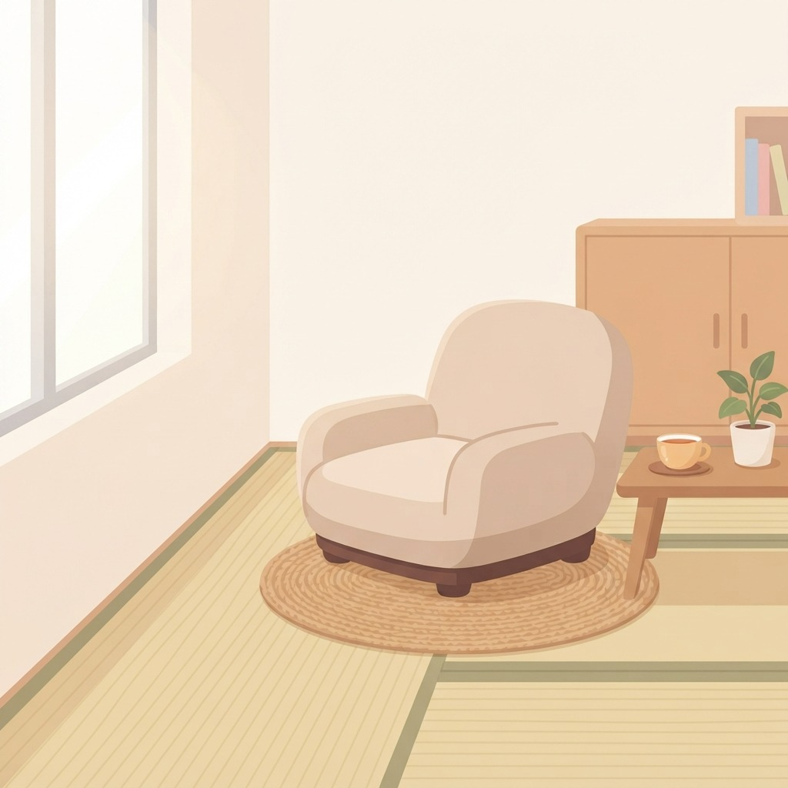
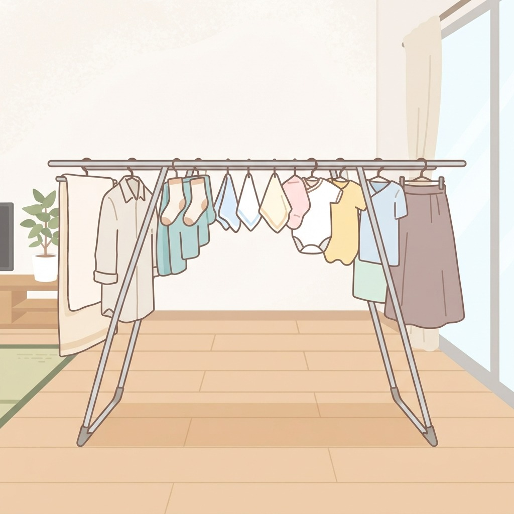
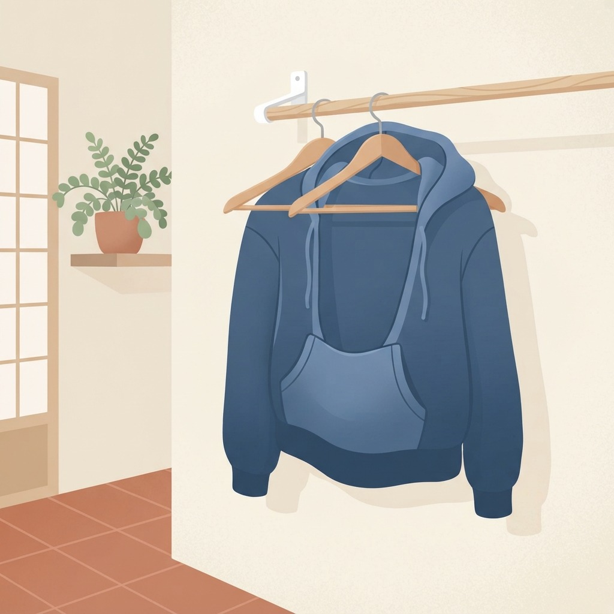
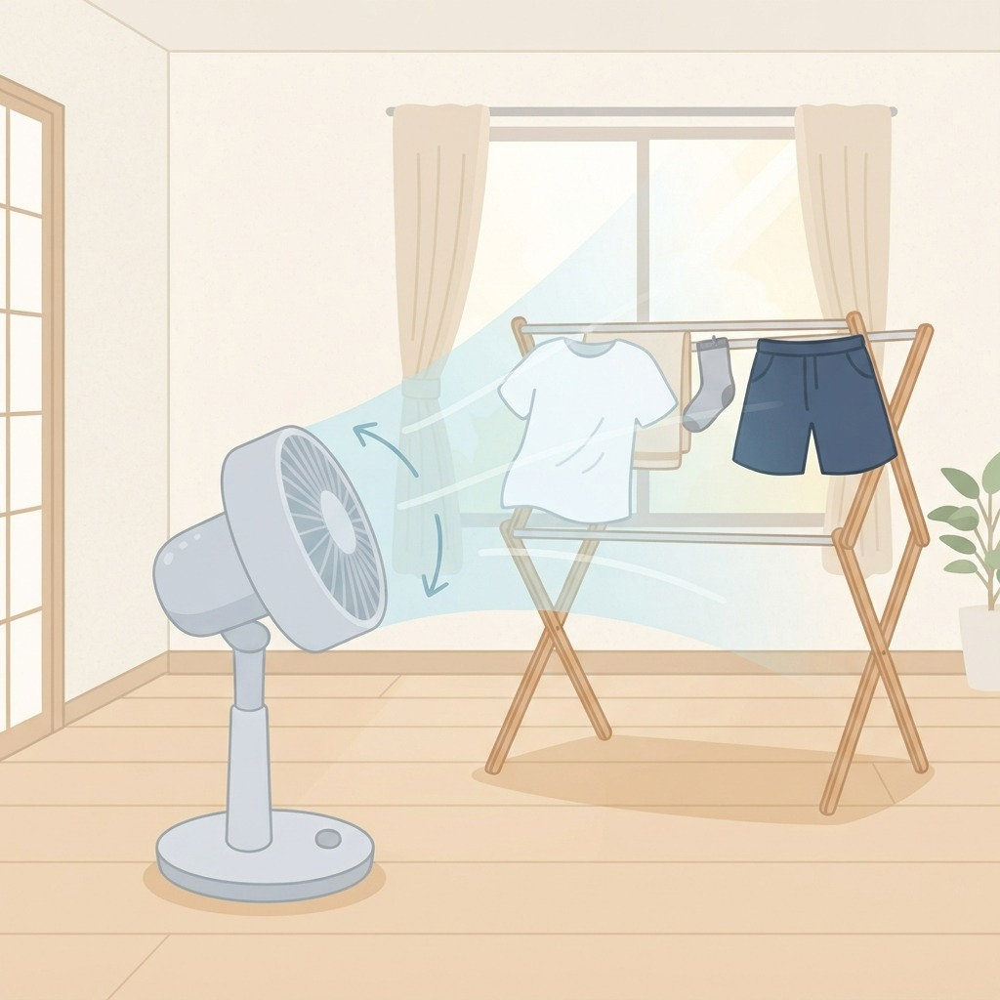
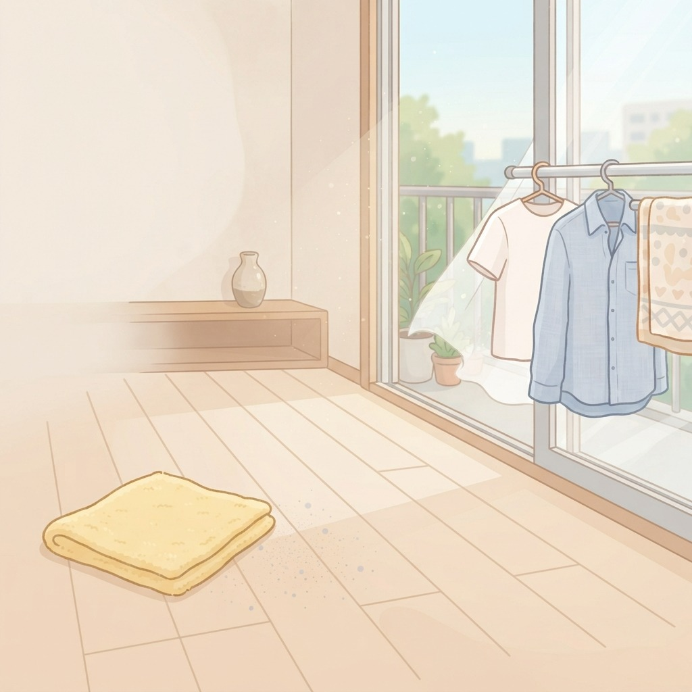

部屋干しが乾かない
置き場所と干し方を変えるだけ

1壁ぎわを避ける
壁や窓のそばは空気が動きにくい。部屋の中央寄り、人が通る動線の近くへ。

2アーチ型に干す
外側に長いもの、内側に短いものを。下側に空気の通り道ができて乾きやすい。

3厚手は裏返して
パーカーのフードやポケットは裏返すか、ハンガー2本に渡して口を開けておく。

4風は下から当てる
扇風機やサーキュレーターを洗濯物の斜め下から。首を振らせて全体に当てる。

5干す前に一拭き
床のホコリを拭いておくと、風で舞い上がったものが洗濯物につきにくい。
毎日のくらしメモは Instagram で更新中
Instagram をフォロー